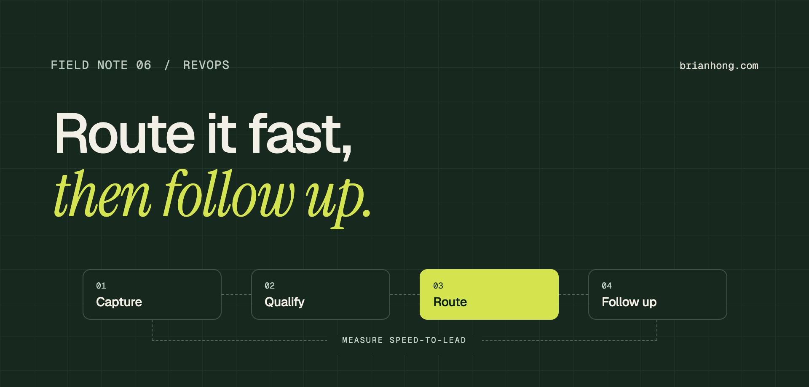

Salesforce lead routing and speed-to-lead: a RevOps playbook
Most lead leakage isn’t a marketing problem. It happens in the gap between a form fill and the first touch, and routing is where you close it.

Marketing hands over a lead that hit every scoring threshold. It sits in a queue overnight, gets assigned to a rep who is on PTO, and finally gets a generic email three days later. By then the buyer has booked a demo with someone else. Nobody did anything wrong on paper. The routing just wasn’t designed.
Lead routing in Salesforce is the set of rules that decides who owns a new lead, how fast they hear about it, and what happens next. Good routing is boring: the right rep gets the right lead in minutes, the follow-up starts automatically, and RevOps can prove it with a report.
At Newsela I built Lead-to-Opportunity automation with Salesloft so reps could book meetings straight from the record, routed campaign members into cadences, and sent MQL assignments and stage changes to Slack. It cut manual entry by about 40%. This note is the playbook I’d use again.
What lead routing in Salesforce covers
Routing is more than the assignment rule. It’s a chain, and every link can drop the lead:
- Capture Web-to-lead, form tools, list imports, events, and integrations. Each one needs the same required fields and the same source values, or routing has nothing to work with.
- Qualify Scoring and the MQL decision. Usually lives in the marketing automation platform, but the status that lands in Salesforce is what routing reads.
- Route Assignment rules, Flow, or a routing tool decide the owner, plus round-robin, territory, account matching, and fallbacks.
- Follow up Notify the owner, enroll the lead in a cadence, and start the clock. Routing that ends at ‘owner assigned’ is only half built.
Why leads stall between marketing and sales
When I audit a routing setup, the same handful of problems show up:
- Queues nobody watches Leads land in a queue as a safety net, and the queue becomes the destination. Every queue needs a named owner and an age alert.
- Existing accounts ignored A new lead from a current customer gets round-robined to a new-business rep instead of the account owner. Match to accounts before you distribute, which only works if duplicate accounts are under control.
- Out-of-office owners Round-robin keeps assigning to reps who are out. Without an availability flag, leads wait for someone who isn’t there.
- Rules nobody can read Forty assignment rule entries built over five years, with order that matters and no documentation. Nobody wants to touch it, so nobody fixes it.
- Status drift Marketing says MQL, sales says Working, and the lead status picklist has eleven values that mean roughly the same thing. Routing can’t key off a status nobody agrees on.
“A lead that waits in a queue isn’t a marketing number or a sales number. It’s nobody’s number.”
Choosing a routing method: assignment rules, Flow, or a routing tool
There are three common options. Pick the simplest one that handles your real rules, not the rules you might have next year.
- Lead assignment rules Native, simple, and fine for routing by geography, segment, or source into users or queues. Weak at round-robin, account matching, and capacity.
- Record-triggered Flow Handles account matching, round-robin with a counter, availability checks, and fallbacks. Keep the logic in one flow per object with clear decision elements, and document it. If you’re still on old automation, migrate it to Flow first.
- Dedicated routing tool Worth it when you route across Leads, Contacts, and Accounts, need weighted capacity, or have many teams changing rules weekly. Adds cost and another admin surface.
Whichever you choose, use exactly one. Assignment rules plus a flow plus a tool that all touch OwnerId is the most common reason a lead ends up with the wrong person.
Define MQL and ownership before you build
Routing logic is easy to build and hard to agree on. Get these decisions written down and signed off by marketing and sales leadership before touching Flow:
| Decision | Example answer | Owner |
|---|---|---|
| What makes an MQL | Score ≥ 60 and a business email | Marketing ops |
| Existing account? | Goes to the account owner | Sales leadership |
| Distribution | Round-robin within segment team | Sales ops |
| Unavailable rep | Skip and assign to the next rep | Sales ops |
| SLA | First touch within 1 business hour | VP Sales |
| Recycle rule | No response after cadence → Nurture | Marketing ops |
The SLA row is the one most teams skip. Without it, there’s nothing to measure, and routing problems stay anecdotal.
Hand off to the sales engagement tool
Assignment isn’t the finish line. The first touch is. If reps use Salesloft or Outreach, the lead should enter the right cadence automatically when it’s routed, based on source, persona, or campaign.
- Cadence by source Demo requests get a short, phone-heavy cadence. Content downloads get a slower, email-led one. Map them in a table, not in someone’s head.
- Campaign members Event and webinar attendees come in as campaign members. Route them into the matching cadence so follow-up happens the same day.
- Write back to Salesforce Activities, cadence status, and meetings booked must sync to the lead and opportunity. Otherwise reporting on speed-to-lead and conversion breaks.
- Convert cleanly When the meeting is booked, convert to Contact and Opportunity with the right account, campaign, and source. That’s where pipeline attribution starts.
Alerts reps actually act on
Email notifications from Salesforce get filtered and ignored. A Slack message in the rep’s DM or team channel, with the lead’s name, company, source, and a link to the record, gets clicked.
Keep alerts narrow: new MQL assigned, SLA about to be breached, and stage changes on deals that matter. If every update pings Slack, reps mute the channel and you’re back to email.
How to measure speed-to-lead
Speed-to-lead is the time between a lead becoming routable and the first real touch from a rep. Capture both timestamps on the record so you can report on it in Salesforce, not in a spreadsheet.
Set First_Touch_Date__c from the first logged call or sent email, not from a status change, since reps change status without contacting anyone. Then report median minutes by team and by source, and the share of MQLs touched inside the SLA.
A 30-60-90 day lead routing plan
- Days 1–30 Map every lead source and every rule that touches OwnerId. Agree on the MQL definition, ownership rules, and SLA. Add MQL and first-touch timestamps and baseline speed-to-lead.
- Days 31–60 Consolidate routing into one method. Add account matching, availability, and a queue fallback with an owner. Turn on Slack alerts for new MQLs and SLA breaches.
- Days 61–90 Connect routing to cadences in your engagement tool. Publish a speed-to-lead dashboard by team and source. Review it with sales and marketing leadership every month.
Routing quality depends on data quality. If source values, account names, and lead status are a mess, start with data stewardship, or the rules will route garbage very quickly.
Frequently asked questions
What is lead routing in Salesforce?
Lead routing in Salesforce is the set of rules that decides who owns a new lead, how they’re notified, and what follow-up starts. It usually combines lead assignment rules or Flow with account matching, round-robin, and a handoff to a sales engagement tool.
Should I use lead assignment rules or Flow for routing?
Use assignment rules when routing is simple: geography, segment, or source into users or queues. Use a record-triggered Flow when you need account matching, round-robin, rep availability, or fallbacks. Pick one method so only one thing changes the lead owner.
What is speed-to-lead?
Speed-to-lead is the time between a lead becoming ready for sales and the first real contact from a rep. Track it with two timestamps on the lead, MQL date and first touch date, and report the median and the share of leads contacted inside your SLA.
How do I route leads from existing customers?
Match the lead to an existing account by domain or company before distributing, and assign it to the account owner. A tool or a Flow with a lookup on email domain handles this. Otherwise current customers get treated like cold prospects.